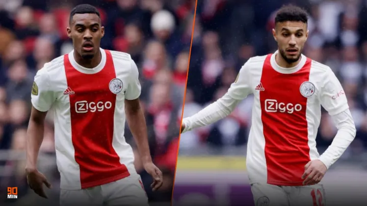

Այաքսի վունդերկինդները Մազռաուին և Գրավենբերխը տեղափոխվում են Բավարիա Մյունխեն։
Այաքսի վունդերկինդները Մազռաուին և Գրավենբերխը տեղափոխվում են Բավարիա Մյունխեն։ Նրանց աշխատավարձի մասին դեռ տեղեկություն չկա:
Այս սեզոնում Մազռաուին խաղացել է 34 խաղ խփել է 5 գոլ և տվել է 4 ասսիստ, իսկ Գրավենբերխը խաղացել է 42 խաղ խփել է 3 գոլ և տվել է 6 ասսիստ։